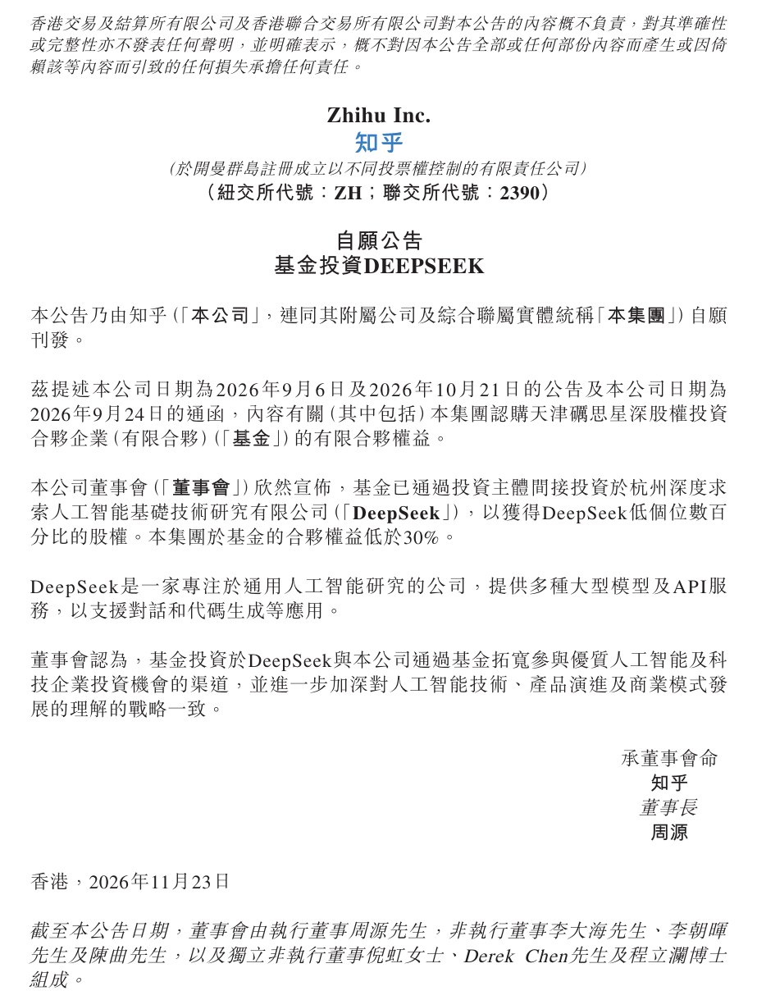

新闻 · 2026-11-26 12:00
知乎 CEO 周源回应间接投资 DeepSeek：对长期价值有清晰判断，不会牺牲主营业务发展
知乎CEO周源回应间接投资DeepSeek，称系经审慎评估的长期战略决策，获低个位数百分比股权，不牺牲主营业务及财务稳健性，强调将继续执行回购计划。公司Q3营收6.59亿元，同比持平，毛利率57.2%，净亏损4958.3万元，同比扩大6.28%。

来源与核验
单一信源报道，未交叉核实
知乎CEO周源回应间接投资DeepSeek，称系经审慎评估的长期战略决策，获低个位数百分比股权，不牺牲主营业务及财务稳健性，强调将继续执行回购计划。公司Q3营收6.59亿元，同比持平，毛利率57.2%，净亏损4958.3万元，同比扩大6.28%。

单一信源报道，未交叉核实